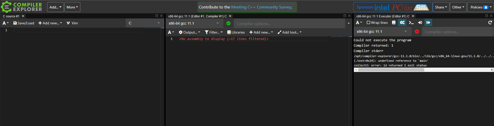

Compilers
Introduction
The Compilers lab is designed for to experience different programming languages, how they compile and subsequent inputs and outputs. You will develop basic understanding and appreciation of how high level code compiles down to machine code.
We will be using https://gcc.godbolt.org which is an interactive compiler exploration website that supports multiple language codes with the functionality to see in real time the compiled code.
Throughout this lab you will can refer to documentation for the source code and the compiled code:
-
GCC -> https://www.gnu.org/software/gnu-c-manual/gnu-c-manual.html#Preface
-
Python 3.9 Bytebase -> https://docs.python.org/3/library/dis.html#python_bytecode_instructions
-
Ada -> https://docs.adacore.com/live/wave/arm12/html/arm12/arm12.html
-
GNAT -> https://gcc.gnu.org/onlinedocs/gcc-4.7.4/gnat_ugn_unw.pdf
Basics of C
Throughout this lab you will can refer to documentation for the soruce code and the compiled code.
Go to https://gcc.godbolt.org/z/6hTG88doT to access a blank script in C.
Once you have loaded this you should see three windows like shown below.
The first window is where you select your language code type in your source code, the second window shows you the complied source code, to the compiler of your choice, and the third window shows output to console/terminal.

C is one the of foundational code languages upon which many other languages draw lineage from. C like C# uses the same keywords and you will see common syntax. For those who have not experienced C# do not worry, we are going to go step by step.
In order for any program to run C must have a main() function, for this is the entry point for script. All code gets executed in the main, you can create other functions outside of main() and call them inside.
Now you will need to write in the following code as seen below into the first window of Compiler Explorer that says C Source.
- Line 1 has the functions name and a returnable keyword,
int. This means that whenmain()executes and reaches the end of the script it will return an integer to indicate it has finished to the hosts environment. - Line 3 introduces the keyword
returnwhich will return a value, in this ase 0, anint - Lines 2 an 4 have the identifiers
{ }, this encapsulates the code into a block. The compiler needs this syntax to understand where a block of code starts and finishes.
As you were entering the source code into the window 1, you will have seen the second window compiling the code in real-time. Your assembly code should look like below.
The code looks very similar to that of the lecture, keywords/instructions; pushq, movq, movl, popq and ret. So nothing should be new here, even the commands to left of the keywords are the same.
Not lets see when we add two integers together.
Edit the source code the look like the following:
- We declare the data we want our variables to be in this instance
inton lines 3 to 5. - Remember, C is strong typed.
- We provide the keyword with an identifier,
a,b, andsumand those identifiers with the values5&5and the result of5 + 5.
Now we can see that the compiled code has changed and should look like below:
main:
pushq %rbp
movq %rsp, %rbp
movl $5, -4(%rbp)
movl $5, -8(%rbp)
movl -4(%rbp), %edx
movl -8(%rbp), %eax
addl %edx, %eax
movl %eax, -12(%rbp)
movl $0, %eax
popq %rbp
ret
Now we have an extra 6 lines of code to examine, specifically lines 4 to 10.
-
Firstly, looking at lines 4 and 5, we can see that the value 5 is stored in memory addresses that are 4 and 8 bytes away from the
%rbp, recall from the lecture about memory spacing.movl $5, -4(%rbp) movl $5, -8(%rbp) -
Next we can see that lines 6 and 7 reference the addresses of the two values by accessing the addresses located 4 and 8 bytes away from the
%rdpand get ready to perform artimetic operations by storing using%edxand%eax.movl -4(%rbp), %edx movl -8(%rbp), %eax -
Ok so finally we can see that lines 8, 9 and 10 deal with summation of the variables
aandb.addl %edx, %eax movl %eax, -12(%rbp) movl $0, %eax -
Notice we have a new keyword,
addl, we are now adding the two values stored in the addresses pointed to by%edxand%eax. -
The code then tempoarily stores the result in
%eaxand moves it memory address 12 bytes away from the%rdp. Finally,%eaxis zeroed off so it does not point to anything.
CALL TO ACTION
So you add different ways and this can change the output of the compiler. Modify the code so that it looks like the various examples shown below and note the differences in the compiled code:
Lets do something that includes window 3, the console/terminal. As long as you code has been compiling fine the output displayed should be...
So what about if we want to return the result of the summation we have been doing to the console/terminal? Make your source code look like the below.
Ok so lets look at the first line, this is new, in order to output information generated by the programmer to the terminal, C needs to "include" a library of functions/code/operations. So we will include 'Standard Input Output' library.
The file extension for this library is .h, in C and C++ libraries and imported code are stored in header files, hence the .h.
If you don't include this library with the source code you will see the error, like below, in window three and if you read the message you are told to include the missing library.
Lets look at line 6, we can see we are using a new function that comes from the stdio.h library, printf().
So breaking this down we can see that printf() function currently has two arguments or inputs.
Firstly, we have a string, this is a data type that lets you store a sequence of characters.
The second argument is the identifier sum, remember this is the result of the summation the script performs.
Finally, we have a format specifier in the string %d this means at this position in the string you are promising to provide an variable, in this case an integer(d), sum.
You can see more about format specifiers here, https://www.tutorialspoint.com/format-specifiers-in-c.
Now if we look in the compiler window we can see more code as expected, and certainly some new things.
.LC0:
.string "%d = 5 + 5"
main:
pushq %rbp
movq %rsp, %rbp
subq $16, %rsp
movl $10, -4(%rbp)
movl -4(%rbp), %eax
movl %eax, %esi
movl $.LC0, %edi
movl $0, %eax
call printf
movl $0, %eax
leave
ret
-
Looking over this code, we can see 5 new lines.
-
The first line
.LC0:means local constant, e.g string literal, constants are values that cannot be changed. -
Line 2, shows
stringwhich means here is a string fromprintf()....LC0: .string "%d = 5 + 5" -
The next new line is 6, reserves 16 bytes of memory for local variables, we have a string now.
subq $16, %rsp -
The fourth new line,9, points the address of the result of the sum to
%esi.%esilinks to theprintf()function where it passes the value of this address into%dformat specifier.movl %eax, %esi -
The fifth new line is line 10, where the local constant
.LC0address is pointed to bb%edi.movl $.LC0, %edi -
Finally, line 12 use a keyword call to the function printf, that is linked to
call printfcall printf
CALL TO ACTION
Modify the code to increment the sum by itself and print to console:
#include <stdio.h>
int main()
{
int sum = 5 + 5;
printf("%d = 5 + 5\n",sum);
int sumsum = sum+sum;
printf("%d = %d + %d\n",sumsum,sum,sum);
return 0;
}
Did you know that if you hover over the lines in the source code related compiler code is highlighted.
Python
Now you have a look two basic operations in C and analysed the compile code, lets look at Python which you may find easier to understand.
Unlike C and other languages, Python doesn't need you to define data types, ints, floats, chars, string etc. and therefore is consider loose typed.
Select Python from the drop down list in the window 1, top right. Or go here...https://godbolt.org/z/7dbb69Gxh
You will probably notice several major differences, and maybe the compiler looks easier to understand?
So we make an easier comparison between C and Python source code and compilers, lets use the same code as before, modify your to look like the below.
Line 1 the keyword,def, defines a function whose name is, main(). Line 2 pass
is essientally a placeholder.
CALL TO ACTION
Python is particular about formatting, if code belong inside a function, or block then it must be indented by 4 spaces or tab.
If you look at the IDE there are four faint when you highlight the white space between pass and the left of the word.
So lets look at the compiled code for this function.
So we can see that we have completely different assembly code..., well that isn't a bad thing. Each code language compiles differently. Sometimes these assembly languages are easier to understand as they are written using meaningful words.
-
Line 1, loads the script as a constant, remember constant is something that isn't allowed to change.
-
Line 2, takes the name of the first function and loads it in to memory too.
-
Then the function is made at line 3,
MAKE_FUNCTION. -
STORE_NAMEon line 4, creates a name for the function main so that it the function can be reference later. -
Remember
pass, was a placeholder, well line 6 shows the nothing is to be loaded. -
This is much easier to understand right?
Now lets modify the source code again.
So simple enough, three variables that contain whole numbers. This is the same as our C example earlier, though we are not using the identifier sum as we did in C, because in Python sum is a keyword.
We will now look at the compiled code, but only from line 9, as the previous lines are the same as before.
LOAD_CONST 1 (5)
STORE_FAST 0 (a)
LOAD_CONST 1 (5)
STORE_FAST 1 (b)
LOAD_CONST 2 (10)
STORE_FAST 2 (c)
LOAD_CONST 0 (None)
RETURN_VALUE
-
Lines 9, 12 and 15 show that the values of the variables are loaded into memory.
-
Lines 10, 13 and 16 stores the variable name into the top of the stack (memory).
-
Much like C's
movl $0, %eaxpython's compiler resets the memory pointer.
Okay, so we are almost there, but we haven't sent anything to the terminal yet, modify your code to look like this.
So only two new lines, 5 and 6.
-
On line 5 the
printf()function takes each variable (a,b,c) separated by string to produce 10 = 5 + 5. -
Line 7, is where we call the function
mainwhich will cause all of the code to be executed the output appear in the console/terminal (window 3). -
Now lets look at the additional code that has appeared in the compile window.
-
Line 6 to 10 shows how the the function
mainis called in line 7 of the source code.
-
You can see that the function is loaded by its name,
LOAD_NAME, which was originally stored in memory withSTORE_NAMEearlier. -
The function is then called
CALL_FUNCTIONand subsequently removedSTORE_NAMEfrom the top of the stack (memory).
Ada
Ada is used in a lot of less "popular" use cases where there is a strong focus on security (Ada is extremely strong typed, all data types used must be defined, no intrinsic types) and concurrency (using Ada's task features). The US Department of Defense, which developed Ada, still needs that level of quality for the Space Station and for weapons systems where proper function was a matter of life or death.
You are not likely to use Ada in industry, unless you are working for a space agency or defense, but we should probably look at this language because it is named after Ada Lovelace, who was the first human to write a computer program for the Analytical Engine - a machine that we now call...the computer.
- Documentation for Ada 2012 is available at:
-
https://docs.adacore.com/live/wave/arm05/html/arm05/arm05.html
-
Or Ada 1995 (before some of you were born...) can be found below and provides a nicer interface to look at how the code works, though this version may not have all 2012 edition functions it will provide as good ndation:
-
CALL TO ACTION
-
Select Ada from the drop down list in the window 1, top right or go here:
-
Modify the Ada script to look like this...
pragma Source_File_Name (main, Body_File_Name => "main.adb");
procedure main is
a : Integer := 5;
b : Integer := 5;
c : Integer;
begin
c := a + b;
end main;
-
Line 1, holds no significance to the compiled code and used to override the normal naming convention of a this script.
-
Line 3 and 12 wrap the code inside of
main()this is so the code we write can actually execute. -
Now lets look the following lines of code.
a : Integer := 5; b : Integer := 5; c : Integer; -
As stated earlier Ada code language is strongly typed, and as such you have to define the data types for each variable. Unlike C/C++/C#/Java etc. the identifier
a,bandccomes before the data type keywordIntegerwhich is the preceded by the assigned value,5, that is compatible with that data type. -
So lets look at the assembly code. Well this should look familiar to you now... if not revisit the earlier section on C.
_ada_main: pushq %rbp # movq %rsp, %rbp #, movl $5, -4(%rbp) #, a movl $5, -8(%rbp) #, b movl $10, -12(%rbp) #, c nop popq %rbp # ret -
The eagle eyed among you will have noticed there is one new command which is on Line 7.
nop -
nopis the command for no operation. This is not necessarily a time-consuming process, the processor might remove it from the pipeline before it reaches the execution stage.
All that remains here is to print information to the console, so modify your code to look like this.
pragma Source_File_Name (main, Body_File_Name => "main.adb");
with Ada.Integer_Text_IO;use Ada.Integer_Text_IO;
procedure main is
a : Integer := 5;
b : Integer := 5;
c : Integer;
begin
c := a + b;
Put(c);
end main;
-
So you'll notice that that the only differences are line 2 and line 12.
-
Line 2, imports some libraries needed to send data to the output,
with Ada.Integer_Text_IO;use Ada.Integer_Text_IO; -
Line 12, use the
Putfunctions to 'put', an integer in this case, to the terminal. Without line 2, we could not output the integer to the console/terminal.Put(c); -
Ok so now we can look at the assembly code, and much like the compiled C code, we can see familiar commands, keywords and operations. However once again, you may have noticed three new lines?
_ada_main: pushq %rbp # movq %rsp, %rbp #, subq $16, %rsp #, movl $5, -4(%rbp) #, a movl $5, -8(%rbp) #, b movl $10, -12(%rbp) #, c movl ada__integer_text_io__default_base(%rip), %edx # movl ada__integer_text_io__default_width(%rip), %eax # movl %eax, %esi # movl $10, %edi # call ada__integer_text_io__put__2 # nop # leave # ret # -
There are two new functions
Ada__integer_text_io__default_baseandada__integer_text_io__default_width.movl ada__integer_text_io__default_base(%rip), %edx # movl ada__integer_text_io__default_width(%rip), %eax # -
The latter gets the length of the number in bits, so in our case 32-bits or 4 bytes as integers are 4 bytes and former selects the base number, as this an integer we are base 10. There is also a new assembly reference
%rip, or register instruction pointer which points to the%edxand%edimemory locations. -
Now we can look at the next new line, 12.
call ada__integer_text_io__put__2 # -
This function sends the data pointed to by
%ripto the console/terminal.
CALL TO ACTION
Modify the code to print all variables to the output and see how the assembled code changes and compare the console outputs. If you have an error did you get every new line of code?
pragma Source_File_Name (Square, Body_File_Name => "main.adb");
with Ada.Text_IO; use Ada.Text_IO;
with Ada.Integer_Text_IO; use Ada.Integer_Text_IO;
procedure main is
a : Integer := 5;
b : Integer := 5;
c : Integer;
begin
c := a + b;
Put(c);
Put(" =");
Put(a);
Put(" +");
Put(b);
end main;
pragma Source_File_Name (Square, Body_File_Name => "main.adb");
with Ada.Text_IO; use Ada.Text_IO;
with Ada.Integer_Text_IO; use Ada.Integer_Text_IO;
procedure main is
a : Integer := 5;
b : Integer := 5;
c : Integer;
begin
c := a + b;
Put_Line(Integer'Image(C) & " =" & Integer'Image(a) & " +"& Integer'Image(b));
end main;
C#
If you are feeling brave, why not have a go at replicating the lab using C#